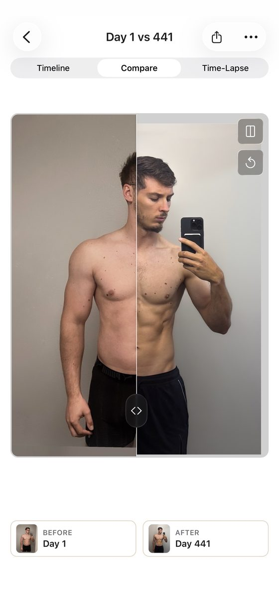

Blog · Best progress photo apps · [DRAFT: noindex, not published; publish date TBD] · Mark Stepchin
GainFrame alternatives: which progress photo app to use instead, by the job
Full disclosure: I build Recomp, one of the alternatives below. Recomp is free with no in-app purchases, and no app pays me [CONFIRM: no ads, affiliate links or partner deals]. Every app here went through the same test kit as my roundup of the best progress photo apps.
Why people look for a GainFrame alternative
GainFrame is the most polished app I tested, and the slowest with my real library. I proposed 4 out of 5 for design and 2 for performance. From my GainFrame review:
- Import stops at 250. It took my 475-photo album in one pick but imports at most the 250 most recent, and the import took about 15 minutes. [CONFIRM: whether all 250 imported; the review screen showed "Import 59 Photos"]
- Finding one date is slow. The photo picker shows thumbnails about a third of the screen tall, so finding one week among hundreds means long scrolling.
- AI comes first. The compare screen shows weight, an AI body-fat estimate and a score, and AI labels cover the photos. AI features send photos to Google's Gemini, which discards them, per its policy.
- The privacy label includes "Data Used to Track You."
- Price. It sells $3.99 a week, $5.99 or $9.99 a month, and $39.99 or $49.99 a year.
The alternatives at a glance
| Leaving because | Alternative | Price | What it does better | What it does worse |
|---|---|---|---|---|
| Import cap, big archive | Recomp | Free, no IAP | Bulk import up to 500 photos at a time, grouped into check-ins by date, with CSV weights | No auto-align; side by side only until the 3.6 slider [after 3.6] |
| Want auto-align | Thumbstone Progress Pics | Free trial, then from $4.99/mo | Auto-align landed about 3 in 4 of my shirtless photos; comparison 4 of 5 | Manual alignment is sluggish |
| Subscription | Fit-Stitch | $4.99 once | No subscription; optional iCloud sync | No alignment; comparison 1 of 5 |
| Tracking label, AI | Check-In: Physique | Free, no IAP | Data Not Collected; no AI by design | Needs iOS 26; untested hands-on |
| Old photos with dates | Then & Now | Free + IAP, from $4.99/mo | Import reads each photo's date; Data Not Collected | Align tool buried per photo |
| Want measurements | Lasmit "Progress" | Free + IAP, from $3.99/mo | Two-way Apple Health sync, measurement history | Compare in landscape only |
[TODO: scores in this table are proposed and partial; every app needs a rescore on the v8 rubric or the Oct 4 measured tiers.]
For a big archive: Recomp
Recomp is built for the job GainFrame struggled with: hundreds of old photos. Bulk import takes up to 500 photos at a time and groups them into check-ins by date, with past weights from a CSV. I built it, so weigh my view of it accordingly. You align by hand with pan, pinch zoom and rotate, scrub the timeline to any date, and compare two dates side by side. Share comparison saves the pair as one JPG with dates and weights, and no watermark.
Recomp never uploads your photos. It sends anonymous usage analytics and crash reports, with no account and no tracking. It has no AI body-fat estimate, by design. It also has no auto-align, no photo export and no iCloud sync.
[TODO: Recomp's measured import time and scroll test. The roundup's CTA says import takes "under a minute"; that's unmeasured (rough estimate ~25 s prep plus ~15 s save for ~450 photos). Don't claim a time until it's measured.]
For auto-align and more compare modes: Thumbstone
If GainFrame's Auto button is why you liked it, Thumbstone's Progress Pics has the auto-align I'd recommend as a first pass. It snaps shoulders and hips to guides after capture, and about 3 in 4 of my shirtless photos landed right. It has side by side, a slider, an overlay and a time-lapse. There's no account, and the label says Data Not Linked to You. Full Thumbstone review.

For no subscription: Fit-Stitch
Fit-Stitch is $4.99 once, the only paid app I tested with no subscription. It syncs to your own iCloud and locks with Face ID. Comparing is the weak spot: every comparison is a card built in its own form, with no alignment, and nothing imports in bulk. Full Fit-Stitch review.
For no tracking and no AI: Check-In: Physique
Check-In is free, labeled Data Not Collected, and uses no AI by design. It has a ghost overlay at capture and a same-pose slider compare. It needs iOS 26 and has no ratings yet, and I haven't scored it hands-on. [TODO: hands-on test before recommending it here]
For old photos with their dates: Then & Now
Then & Now's bulk import reads each photo's date taken and asks for a weight. It's labeled Data Not Collected, with no account. Its voice timer and ghost overlay are Premium, and its Crop & Align is buried in each photo's Adjust & Crop. Full Then & Now review.
For measurements and Apple Health: Lasmit
If you used GainFrame's Apple Health link for body stats, Lasmit is the measurement tracker. It syncs two ways with Apple Health and tracks 17 body measurements. It's a measurement app first, with compare in landscape only. Full Lasmit review.
If you want AI body-fat estimates
I don't grade AI body-fat estimates, so none of these replaces that part of GainFrame. AI scores are noisy across the category: in Rate My Physique, one photo I posted twice scored 9.6, then 8.5. [TODO: link the AI body-fat accuracy article (REC-80, PR #19) once it's live]
When to stay with GainFrame
With 20 to 30 photos, GainFrame probably works very well. If you're starting fresh, care about polish, and want the AI analysis, the import cap and picker may never bite. Its 4.89 average on 65 ratings says early users like it.
What I haven't tested yet
I haven't finished GainFrame's alignment score or re-checked its other compare screens. Check-In and Recomp still need hands-on scores. If you switched away from GainFrame, tell me what made you leave at support@progressphotos.app.
See the progress buried in your camera roll
Compare progress photos on a before-and-after timeline, scroll to any date instantly, and align photos on the fly. Recomp never uploads your photos. It sends anonymous usage analytics and crash reports, with no account and no tracking.